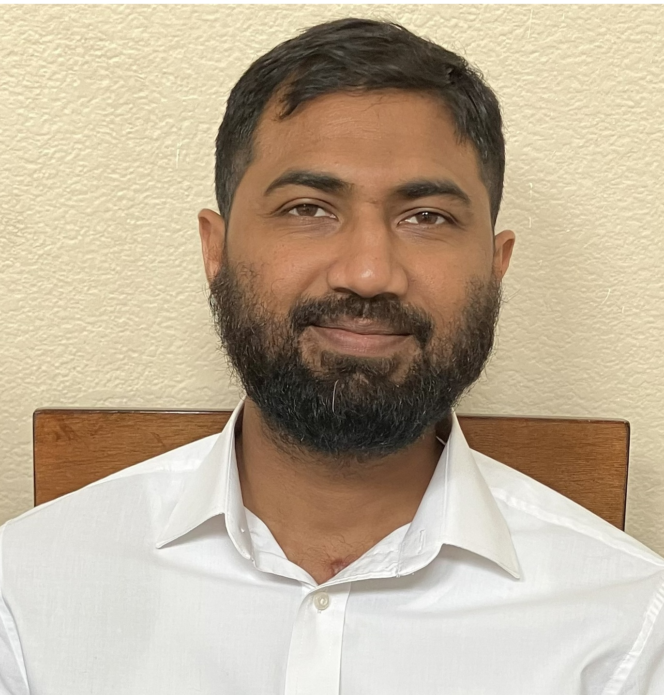

My name is Abdurraheem, living in United States for almost 10 years Originally from South India, and I am a Software QA Engineer with over 8 years of experience, based in Austin, Texas. I began my QA career as a Manual QA Engineer, then learned Selenium with Python and built a test automation framework from scratch. Lets Connect!
My interest in technology started early. My father, Jameel, was working a Data Center Supervisor in Sharjah, UAE, bought me a computer when I was 11 and spent a couple of short sessions introducing my sister and me to computer hardware and operating systems. Those brief lessons sparked my curiosity, and I kept exploring on my own, starting with Windows 98. I went on to earn my Bachelor’s degree in Computer Science and Engineering
I began my career as an IT Support Engineer in Dubai, UAE, where I worked for one year.
In 2016, I relocated to the United States, where I began my QA career.
I currently reside in Austin, Texas, with my wife and two children